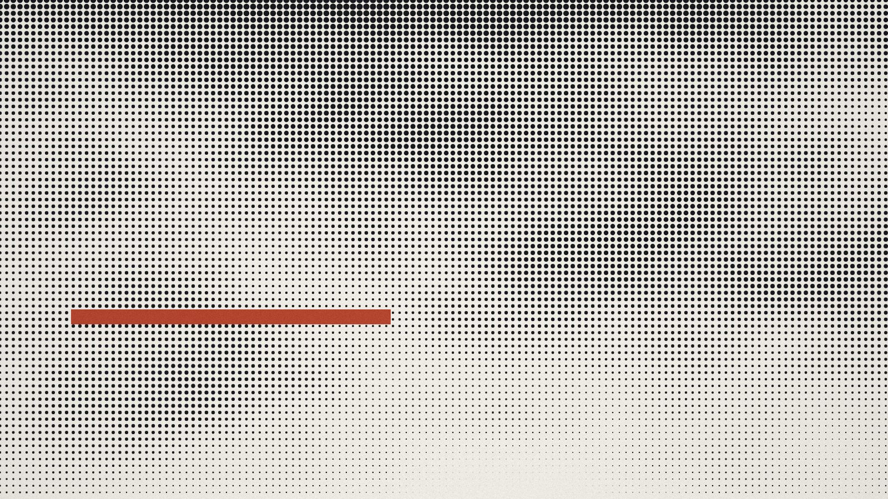
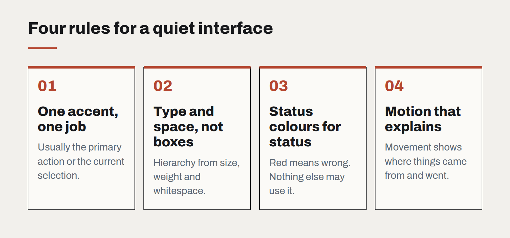

The quiet interface
Gradients, glass and bounce had their decade. The interfaces aging best in 2026 are the ones that get out of the way — and that restraint is harder to design than decoration.

Look at the products people keep using for years and a pattern emerges. Their interfaces are calm. They use few colours, one or two typefaces, and motion only where it explains something. They rarely look impressive in a screenshot. They look better on the hundredth day than on the first.
We have started calling this the quiet interface, and it has become the default direction for most of the product work we do. Not because it is fashionable — though it is — but because it holds up under the conditions real software lives in: long sessions, dense data, tired users, and a constant stream of new features that each want to be noticed.
Restraint is a system, not a style
A quiet interface is not an empty one. It is an interface where every visual element has to justify its presence, and where the budget for emphasis is spent deliberately.
In practice that means a few firm rules:
- One accent colour, used for one job. Usually the primary action or the current selection. When everything is highlighted, nothing is.
- Hierarchy through type and space, not boxes. Size, weight and whitespace separate content more cleanly than borders and cards. Every container you remove is one less thing to align.
- Status colours reserved for status. Red means something is wrong. If red is also the brand colour, the interface has lost a word.
- Motion that explains. A panel that slides from where it came from teaches the user where to find it again. A button that bounces teaches nothing.

Why it matters more now
Two things have made restraint more valuable in the last couple of years.
First, AI features. Assistants, suggestions and generated content are arriving in every product, and each tends to announce itself with sparkles, gradients and a new colour. An interface that was already loud has nowhere left to put them. A quiet one can absorb a new capability without the whole screen changing character.
Second, density. Business software is being asked to show more — more data, more context, more actions — on the same screens. The only way to fit more is to strip out what was never carrying information.
The hard part
Quiet interfaces are harder to design than loud ones, and harder to defend in review. A decorated screen is easy to praise; a restrained one invites the comment that it looks "a bit plain". The answer is to review interfaces in use rather than in isolation: on real data, at the end of a task, next to the three other windows the user actually has open.
It also takes discipline over time. Restraint erodes one reasonable exception at a time — a badge here, a banner there. We write the rules into the design system and review new patterns against them, so that the product that ships in year three is as calm as the one that shipped in year one.
The goal is not minimalism for its own sake. It is an interface where, when something finally does ask for attention, people notice.
Designing interfaces for answers that might be wrong
Traditional software is either right or broken. AI features are usually right, sometimes wrong, and always confident-sounding. The interface has to carry the uncertainty the model won't.
A design system for teams without a design team
Most organisations that need consistency cannot justify a dedicated design-system group. A small, opinionated kit — and the discipline to keep it small — gets them most of the way.
Motion with a job to do
Animation is either explaining something or getting in the way. A short guide to the motion that earns its milliseconds, and the kind that should be cut.